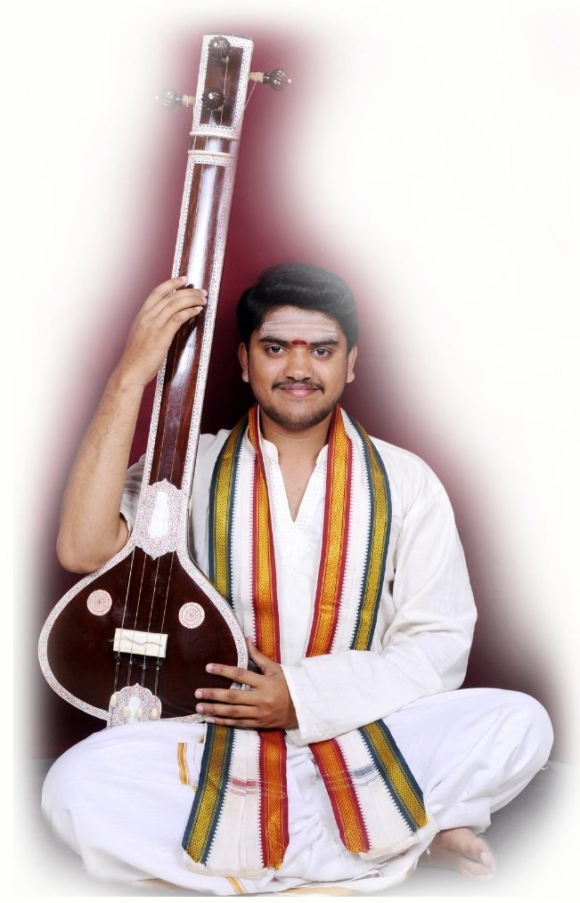
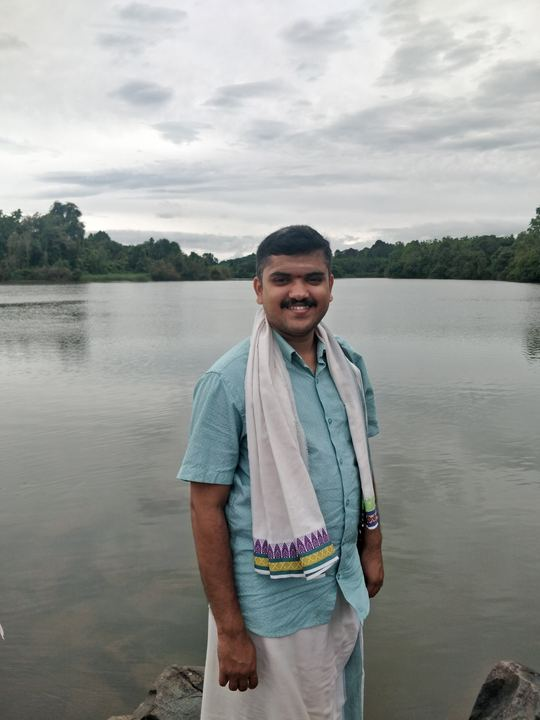
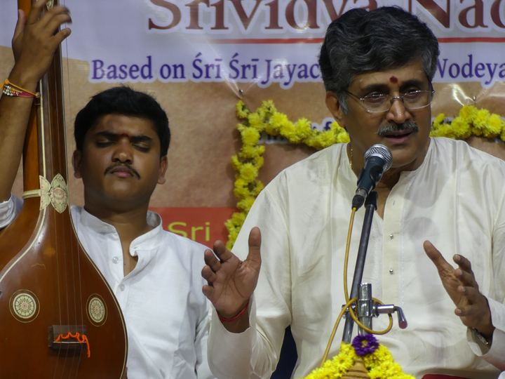
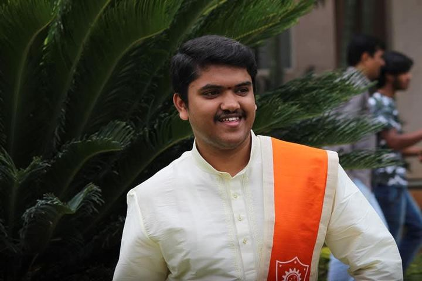
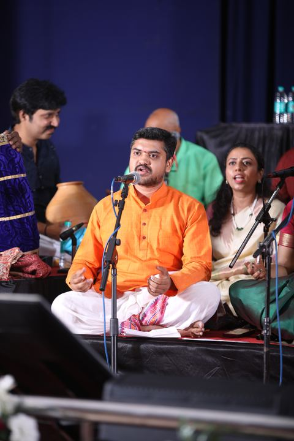
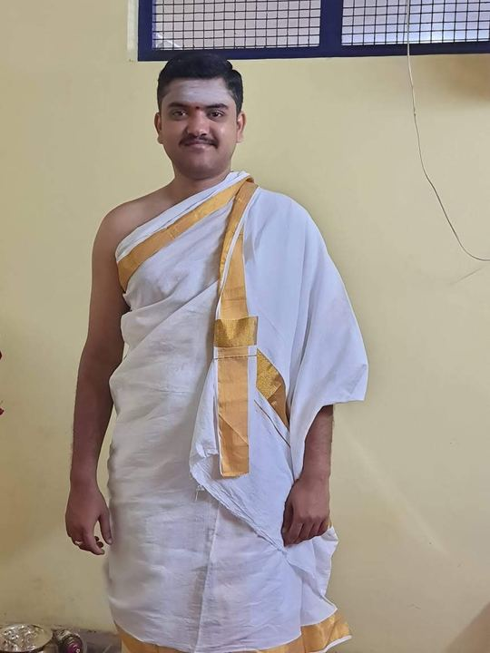
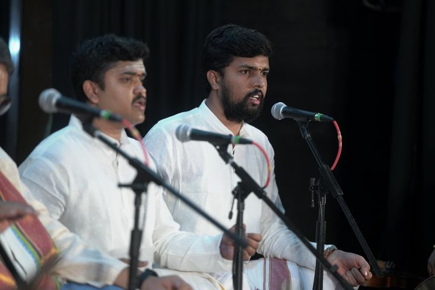

2025
Akashavani B High Grade
Graded B High by All India Radio, Mysuru (Prasar Bharati).
ಕೌಸ್ತುಭ್ ಎಂ. ಎಸ್.
Karnataka classical vocalist from Mysuru. Disciple of Sangeetha Vidwan Dr. R.S. Nandakumar. Teacher, seeker and a voice shaped by bhakti.

Graded B High by All India Radio, Mysuru (Prasar Bharati).
Rasarishi Institution, affiliated to Hampi Kannada University.
Karnataka Music (Vocal), KSEEB, Government of Karnataka. Distinction.
The National Institute of Engineering, Mysuru (VTU, Belagavi).
The Vidyashankara temple at Sringeri holds twelve pillars, each carved for a sign of the zodiac. Through the year, the first rays of the sun fall on the pillar of the month. Karnataka music also rests on twelve: the twelve swarasthanas of the octave.
Here the two meet. The glowing pillar is today's sign. Touch any pillar to hear its swara, tuned to a shruti of D, as a tambura would sound it.
Touch any pillar to hear its swara.
Each page is a corridor of the temple. Wander in any order.






ಸಂಗೀತ ಜ್ಞಾನಮು ಭಕ್ತಿ ವಿನಾ
ಸನ್ಮಾರ್ಗಮು ಗಲದೇ ಮನಸಾ
saṅgīta jñānamu bhakti vinā sanmārgamu galadē manasā
"O mind, can knowledge of music lead to the right path without devotion?" Kousthubh sings with this question close to heart: music, for him, is a path of bhakti and of all round cultural growth.
His music on stage